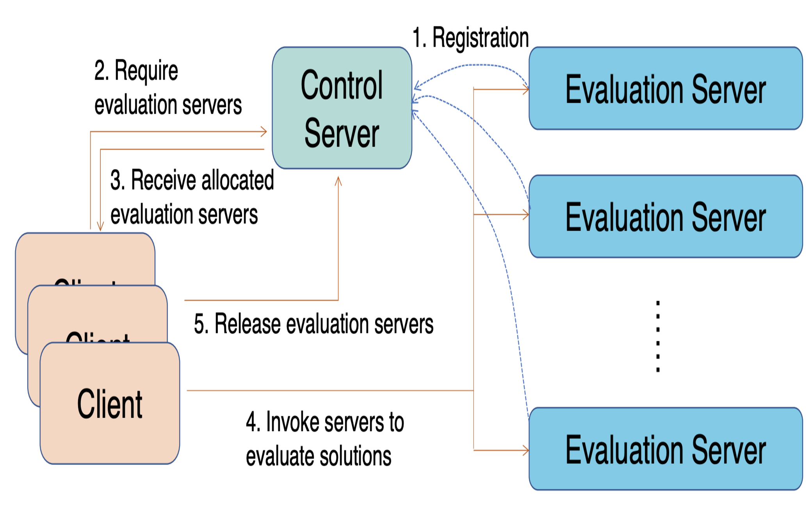

Smith Hall (EDSH)
5000 Forbes Ave
Carnegie Mellon University
Pittsburgh, PA, 15213, US
Email:hanzheh[at]cs.cmu.edu
hanzhehu[at]cmu.edu
huhz[at]pku.edu.cn
I am a PhD student at School of Computer Science of Carnegie Mellon University, adviced by Prof. Shubham Tulsiani. I obtained my Master's degree in Computer Science from School of EECS of Peking University, adviced by Prof. Liwei Wang. Prior to PKU, I got my Bachelor's degree in Physics from Nanjing University and worked at LAMDA of NJU led by Prof. Zhihua Zhou. I spent a wonderful summer in 2021 doing internship at UCSD, adviced by Prof. Xiaolong Wang.
My research interests are Computer Vision and Machine Learning. Especially, I am interested in 3D Vision, Scene Understanding and Label-Efficient Learning.
Here is my resume. You can also view my Google Scholar profile.
I am always open to research collaborations. Feel free to contact me.
08/15/2022
I started my PhD at CMU.
07/04/2022
One paper is accepted by ECCV2022!
06/18/2022
I graduated from Peking University!
11/18/2021
Two papers are submitted to CVPR2022.
09/29/2021
One paper is accepted by NeurIPS2021 as Spotlight!
07/23/2021
One paper is accepted by ICCV2021!
07/04/2021
I am selected as "Top 10 Outstanding Researcher" (学术十杰), EECS of Peking University.
05/28/2021
One paper is submitted to NeurIPS2021.
03/01/2021
One paper is accepted by CVPR2021!
12/02/2020
One paper is accepted by AAAI2021!
07/03/2020
One paper is accepted by ECCV2020!
06/21/2020
One paper is accepted by ICPR2020.
02/01/2020
One paper is accepted by CVPR2020!
| C8 |
Learning Implicit Feature Alignment Function for Semantic Segmentation ECCV '22
Integrating high-level context information with low-level details is of central importance in semantic segmentation. Towards this end, most existing segmentation models apply bilinear up-sampling and
convolutions to feature maps of different scales, and then align them at the same resolution. However, bilinear up-sampling blurs the precise information learned in these feature maps and convolutions incur extra computation costs. To address these issues, we propose the Implicit Feature Alignment function (IFA). Our method is inspired by the rapidly expanding topic of implicit neural representations, where coordinatebased neural networks are used to designate fields of signals. In IFA, feature vectors are viewed as representing a 2D field of information. Given a query coordinate, nearby feature vectors with their relative coordinates are taken from the multi-level feature maps and then fed into an MLP to generate the corresponding output. As such, IFA implicitly aligns the feature maps at different levels and is capable of producing segmentation maps in arbitrary resolutions. We demonstrate the efficacy of IFA on multiple datasets, including Cityscapes, PASCAL Context, and ADE20K. Our method can be combined with improvement
on various architectures, and it achieves state-of-the-art computationaccuracy trade-off on common benchmarks. Code will be made available at https://github.com/hzhupku/IFA.
|
| C7 |
Semi-Supervised Semantic Segmentation via Adaptive Equalization Learning NeurIPS '21 Spotlight
Due to the limited and even imbalanced data, semi-supervised semantic segmentation tends to have poor performance on some certain categories, e.g., tailed categories in Cityscapes dataset which exhibits a long-tailed label distribution.
Existing approaches almost all neglect this problem, and treat categories equally.
Some popular approaches such as consistency regularization or pseudo-labeling
may even harm the learning of under-performing categories, that the predictions or
pseudo labels of these categories could be too inaccurate to guide the learning on the
unlabeled data. In this paper, we look into this problem, and propose a novel framework for semi-supervised semantic segmentation, named adaptive equalization learning (AEL). AEL adaptively balances the training of well and badly performed
categories, with a confidence bank to dynamically track category-wise performance
during training. The confidence bank is leveraged as an indicator to tilt training
towards under-performing categories, instantiated in three strategies: 1) adaptive
Copy-Paste and CutMix data augmentation approaches which give more chance
for under-performing categories to be copied or cut; 2) an adaptive data sampling
approach to encourage pixels from under-performing category to be sampled; 3) a
simple yet effective re-weighting method to alleviate the training noise raised by
pseudo-labeling. Experimentally, AEL outperforms the state-of-the-art methods by
a large margin on the Cityscapes and Pascal VOC benchmarks under various data
partition protocols. Code is available at https://github.com/hzhupku/SemiSeg-AEL.
|
| C6 |
Region-aware Contrastive Learning for Semantic Segmentation ICCV '21
Recent works have made great success in semantic seg- mentation by exploiting contextual information in a local or global manner within individual image and supervis- ing the model with pixel-wise cross entropy loss. However, from the holistic view of the whole dataset, semantic rela- tions not only exist inside one single image, but also prevail in the whole training data, which makes solely consider- ing intra-image correlations insufficient. Inspired by recent progress in unsupervised contrastive learning, we propose the region-aware contrastive learning (RegionContrast) for semantic segmentation in the supervised manner. In or- der to enhance the similarity of semantically similar pix- els while keeping the discrimination from others, we em- ploy contrastive learning to realize this objective. With the help of memory bank, we explore to store all the represen- tative features into the memory. Without loss of generality, to efficiently incorporate all training data into the memory bank while avoiding taking too much computation resource, we propose to construct region centers to represent features from different categories for every image. Hence, the pro- posed region-aware contrastive learning is performed in a region level for all the training data, which saves much more memory than methods exploring the pixel-level rela- tions. The proposed RegionContrast brings little computa- tion cost during training and requires no extra overhead for testing. Extensive experiments demonstrate that our method achieves state-of-the-art performance on three benchmark datasets including Cityscapes, ADE20K and COCO Stuff.
@InProceedings{Hu_2021_ICCV,
author = {Hu, Hanzhe and Cui, Jinshi and Wang, Liwei},
title = {Region-Aware Contrastive Learning for Semantic Segmentation},
booktitle = {Proceedings of the IEEE/CVF International Conference on Computer Vision (ICCV)},
month = {October},
year = {2021},
pages = {16291-16301}
}
|
| C5 |
Dense Relation Distillation with Context-aware Aggregation for Few-Shot Object Detection CVPR '21
Conventional deep learning based methods for object detection require a large amount of bounding box annotations for training, which is expensive to obtain such high quality annotated data. Few-shot object detection, which learns to adapt to novel classes with only a few annotated examples, is very challenging since the fine-grained feature of novel object can be easily overlooked with only a few data available. In this work, aiming to fully exploit features of annotated novel object and capture fine-grained features of query object, we propose Dense Relation Distillation with Context-aware Aggregation (DCNet) to tackle the few-shot detection problem. Built on the meta-learning based framework, Dense Relation Distillation module targets at fully exploiting support features, where support features and query feature are densely matched, covering all spatial locations in a feed-forward fashion. The abundant usage of the guidance information endows model the capability to handle common challenges such as appearance changes and occlusions. Moreover, to better capture scale-aware features, Context-aware Aggregation module adaptively harnesses features from different scales for a more comprehensive feature representation. Extensive experiments illustrate that our proposed approach achieves state-of-the-art results on PASCAL VOC and MS COCO datasets. Code will be made available at https://github.com/hzhupku/DCNet.
|
| C4 |
Context-aware Graph Convolution Network for Target Re-identification AAAI '21
Most existing re-identification methods focus on learning robust and discriminative features with deep convolution networks. However, many of them consider content similarity separately and fail to utilize the context information of the query and gallery sets, e.g. probe-gallery and gallery-gallery relations, thus hard samples may not be well solved due to the limited or even misleading information. In this paper, we present a novel Context-Aware Graph Convolution Network (CAGCN), where the probe-gallery relations are encoded into the graph nodes and the graph edge connections are well controlled by the gallery-gallery relations. In this way, hard samples can be addressed with the context information flows among other easy samples during the graph reasoning. Specifically, we adopt an effective hard gallery sampler to obtain high recall for positive samples while keeping a reasonable graph size, which can also weaken the imbalanced problem in training process with low computation complexity. Experiments show that the proposed method achieves state-of-the-art performance on both person and vehicle re-identification datasets in a plug and play fashion with limited overhead.
|
| C3 |
Class-wise Dynamic Graph Convolution for Semantic Segmentation ECCV '20
Recent works have made great progress in semantic segmentation by exploiting contextual information in a local or global manner
with dilated convolutions, pyramid pooling or self-attention mechanism.
In order to avoid potential misleading contextual information aggregation in previous works, we propose a class-wise dynamic graph convolution(CDGC) module to adaptively propagate information. The graph
reasoning is performed among pixels in the same class. Based on the
proposed CDGC module, we further introduce the Class-wise Dynamic
Graph Convolution Network(CDGCNet), which consists of two main
parts including the CDGC module and a basic segmentation network,
forming a coarse-to-fine paradigm. Specifically, the CDGC module takes
the coarse segmentation result as class mask to extract node features
for graph construction and performs dynamic graph convolutions on the
constructed graph to learn the feature aggregation and weight allocation.
Then the refined feature and the original feature are fused to get the final
prediction. We conduct extensive experiments on three popular semantic segmentation benchmarks including Cityscapes, PASCAL VOC 2012
and COCO Stuff, and achieve state-of-the-art performance on all three
benchmarks.
@misc{hu2020classwise,
title={Class-wise Dynamic Graph Convolution for Semantic Segmentation},
author={Hanzhe Hu and Deyi Ji and Weihao Gan and Shuai Bai and Wei Wu and Junjie Yan},
year={2020},
eprint={2007.09690},
archivePrefix={arXiv},
primaryClass={cs.CV}
}
|
| C2 |
Boundary-aware Graph Convolution for Semantic Segmentation ICPR '20
Recent works have made great progress in semantic segmentation by exploiting contextual information in a local or global manner with dilated convolutions, pyramid pooling or self-attention mechanism. However, few works have focused on harvesting boundary information to improve the segmentation performance. In order to enhance the feature similarity within the object and keep discrimination from other objects, we propose a boundary-aware graph convolution (BGC) module to propagate features within the object. The graph reasoning is performed among pixels of the same object apart from the boundary pixels. Based on the proposed BGC module, we further introduce the Boundary-aware Graph Convolution Net- work(BGCNet), which consists of two main components including a basic segmentation network and the BGC module, forming a coarse-to-fine paradigm. Specifically, the BGC module takes the coarse segmentation feature map as node features and boundary prediction to guide graph construction. After graph convolution, the reasoned feature and the input feature are fused together to get the refined feature, producing the refined segmentation result. We conduct extensive experiments on three popular semantic segmentation benchmarks including Cityscapes, PASCAL VOC 2012 and COCO Stuff, and achieve state-of-the-art performance on all three benchmarks.
|
| C1 |
Adaptive Dilated Network with Self-Correction Supervision for Counting CVPR '20
The counting problem aims to estimate the number of ob- jects in images. Due to large scale variation and labeling deviations, it remains a challenging task. The static den- sity map supervised learning framework is widely used in existing methods, which uses the Gaussian kernel to gen- erate a density map as the learning target and utilizes the Euclidean distance to optimize the model. However, the framework is intolerable to the labeling deviations and can not reflect the scale variation. In this paper, we propose an adaptive dilated convolution and a novel supervised learn- ing framework named self-correction (SC) supervision. In the supervision level, the SC supervision utilizes the out- puts of the model to iteratively correct the annotations and employs the SC loss to simultaneously optimize the model from both the whole and the individuals. In the feature level, the proposed adaptive dilated convolution predicts a continuous value as the specific dilation rate for each loca- tion, which adapts the scale variation better than a discrete and static dilation rate. Extensive experiments illustrate that our approach has achieved a consistent improvement on four challenging benchmarks. Especially, our approach achieves better performance than the state-of-the-art meth- ods on all benchmark datasets.
@InProceedings{Bai_2020_CVPR,
author = {Bai, Shuai and He, Zhiqun and Qiao, Yu and Hu, Hanzhe and Wu, Wei and Yan, Junjie},
title = {Adaptive Dilated Network With Self-Correction Supervision for Counting},
booktitle = {The IEEE/CVF Conference on Computer Vision and Pattern Recognition (CVPR)},
month = {June},
year = {2020}
}
|
| T2 |
Label-Efficient Learning for Object Recognition.
Human beings often exhibit strong performance in learning a new concept with only a few examples available. Artificial intelligence, in particular deep learning, usually requires large amounts of labeled data for training and can easily get stuck in label-scarce scenarios. Given this situation, label-efficient learning has become a vital research direction recently, which targets at learning tasks in a label efficient way through techniques such as semi-supervised learning and few-shot learning.
In this dissertation, we study the problem of label-efficient learning for object recognition, especially for semantic segmentation and object detection. The core idea is to fully exploit the limited available labels and enable the model to generalize well to target tasks. Firstly, to alleviate the prevailing imbalance problem in semi-supervised semantic segmentation, we propose a novel adaptive equalization learning framework which adaptively balances the training of well and badly performed categories, and alleviate the training noise raised by pseudo-labeling. Secondly, aiming to fully exploit available labeled data and capture fine-grained features, we propose a dense relation distillation module with context-aware aggregation to tackle the few-shot object detection problem. The abundant usage of the guidance information endows model the capability to handle common challenges such as appearance changes and occlusions. Thirdly, to realize the generalized few-shot semantic segmentation model with strong discriminative power among categories, we propose a meta learning based segmentation model for generalized N-way few-shot segmentation and a region-aware contrastive learning mechanism for supervised semantic segmentation. Empowered by the two techniques, the model is able to efficiently learn holistic context and perform effective N-way K-shot segmentation.
Extensive experiments on the Cityscapes, PASCAL VOC, MS COCO and ADE20K benchmark datasets demonstrate that our methods outperform the state-of-the-art methods by a large margin. Specially, 1) our method on semi-supervised semantic segmentation not only achieves state-of-the-art results, but also obtains significant improvement on under-represented categories; 2) our method on few-shot object detection serves even better under extremely low-shot scenarios, indicating
the ability to capture local detailed information to overcome the variations brought by the randomly sampled training shots; 3) our method on few-shot semantic segmentation outperforms well-established baseline methods by a large margin for generalized few-shot segmentation.
|
| T1 |
Deep Supervised Facial Expression Recognition.
As the great success of machine learning and deep learning, face recognition has
achieved unprecedented development with sufficient data to assist the learning process
of deep learning algorithms. The current facial expression recognition algorithms mainly focus on two important problems: the over-fitting
problem caused by insufficient amount of data and the recognition deviation caused by
illumination, head pose and identity bias. This paper proposes solutions for facial expression recognition tasks in laboratorycontrolled scenes and in-the-wild scenes. First of all, in the laboratory-controlled scenario, due to the lack of data, the use of deep neural networks such as resnet-101 is likely
to cause over-fitting. This paper utilizes the idea of ensemble learning, using multiple convolutional neural networks as sub-classifiers and outputs the final result. This
method achieves the best recognition accuracy on both the FER2013 and CK+ datasets.
Secondly, in the natural scenes, this paper focuses on solving the recognition problem
caused by the invariance of head poses. In former research, the use of the generative
adversarial network (GAN) for this task has been put forward, but the algorithm normally ignores the expression information. In this paper, the updated encoder-decoder
mechanism is used to encode the expression information into the generator, and use it
to generate a complete face with expression information for the expression recognition task. This method is tested on Multi-PIE dataset and achieves very impressive results.
|
|

Derivative-free Optimization(ZOOpt, zero-th order optimization) Our research mainly focused on accomplishing the python packages:ZOOpt and ZOOsrv(a distributed version of ZOOpt), and designing comparative experiments with other packages used for optimization including CMA-ES and BayesOpt. Comparative experiments are designed to compare efficiency of optimization on testing functions such as sphere Prize function and ackley function and on clustering and classification. |
03/2021 - 08/2021
Research Intern at MSRA (Microsoft Research Asia)
10/2021
10/2021
07/2021
05/2021
10/2020
01/2020
09/2019
06/2019
09/2018
10/2016
09/2014
Award for Academic Innovation, PKU
Merit Student of Peking University
Top 10 Outstanding Researcher (学术十杰), EECS, Peking University
HUAWEI Scholarship (top 2%)
Scholarship for Outstanding Research (top 5%)
1st National AI Challenge(Re-ID) Rank 20/2100
Peking University Scholarship
Outstanding Graduates of Nanjing University
Scholarship of Xingquan Fund
Second-class Scholarship for Outstanding Student
Second-Prize in High School Students Physics & Mathematics Contest in China
An INTJ. I love traveling and reading books.
It's been 1470 days since I started !